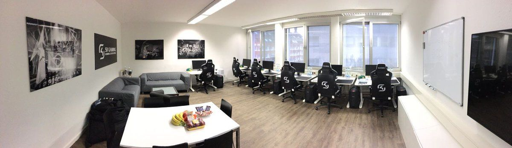

Руководство по созданию киберспортиной команды
Основа киберспорта – мощные компьютеры и оборудование:
Высокопроизводительный ПК – 150-200 тыс. руб. Игровые столы и кресла – 50 тыс. руб. Игровая периферия – 35 тыс. руб.
Если мы решаем создать киберспортивную команду по Counter- Strike из 5 человек, то минимальной суммой для старта будет ≈ 1,2 млн. руб.
Для того, чтобы собрать команду, необходимо создать открытые заявки для потенциальных участников. Желающие вступить в киберспортивную команду должны подготовить резюме, в котором следует указать ФИО, возраст, дисциплину, звание/ранг в компьютерной игре, а также свои сильные стороны. Далее организатор выбирает наиболее подходящих людей на основе их резюме и устраивает соревнования между участниками. Лучшим способом организовать такое соревнование будет проведение его на базе какого-то киберспортивного клуба, для того чтобы у всех участников были равные условия. После «квалификации» будут выбраны самые лучшие и сильные игроки, которые смогут вступить в киберспортивную команду. Также не следует забывать про составление набора правил для участников. У игрока должен быть достаточно высокий рейтинг и успеваемость в учебе. Также одним из требований необходимо сделать минимальный возраст игрока – 14 лет.
Помимо основного игрового состава можно нанять в качестве персонала двух человек, которые будут выполнять задачи, связанные с распределением ресурсов, рекламы и соревнований. Таким персоналом на начальном этапе будут тренер и менеджер. Первостепенная цель тренера заключается «не в том, чтобы читать лекции, а в том, чтобы способствовать обучению, присущему самой деятельности, указывая на возможности для обучения и превращая неудачи в учебный опыт». Также тренер будет составлять план тренировок. Менеджер же будет следить за финансовой составляющей команды, организовывать турниры, проводить анализ эффективности команды, а также заниматься дополнительными организационными мероприятиями.